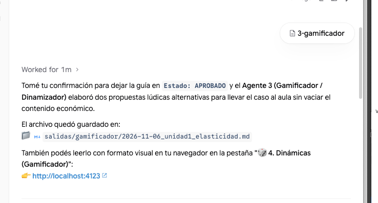
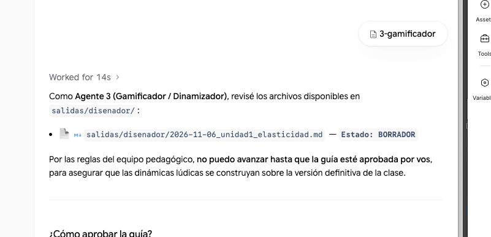
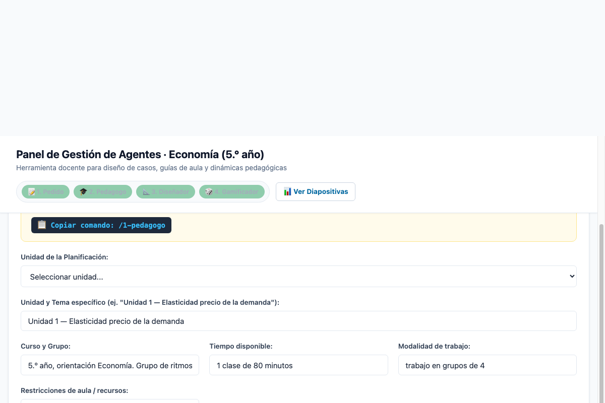
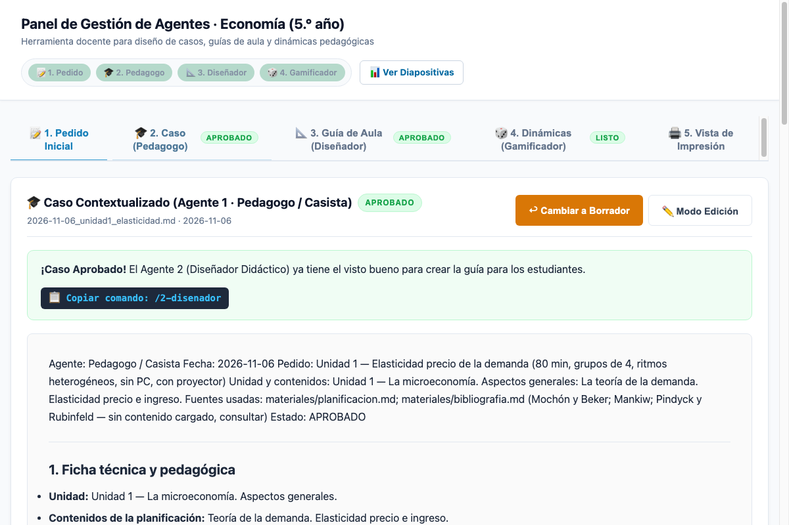
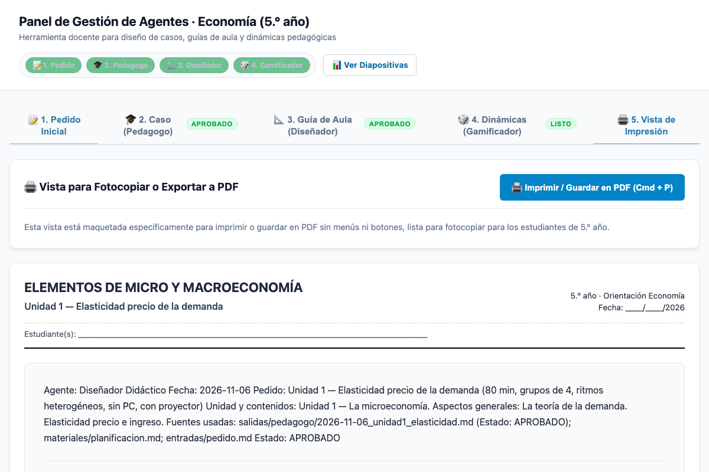

Cómo armar casos de estudio reales, guías de aula y dinámicas pedagógicas adaptadas a la comodidad de cada docente.
Los libros de texto traen ejemplos abstractos y lejanos. Este sistema genera borradores cotidianos argentinos (quioscos, transporte, changas, inflación) en minutos.
1. Pedagogo: crea el caso y núcleo conceptual.
2. Diseñador: crea la guía de aula con andamiaje.
3. Gamificador: crea 2 dinámicas lúdicas.
Los agentes se frenan en cada paso. Nada llega al aula sin que el docente revise y dé su aprobación explícita.
Una secretaría pedagógica virtual anclada a la planificación oficial de la materia.
Los agentes leen directamente los contenidos de materiales/planificacion.md.
[DATO FICTICIO].[VERIFICAR].La IA no reemplaza al docente ni decide por él:
Los contenidos que generan los agentes son idénticos; lo que cambia es cómo preferís interactuar vos.
Trabajás únicamente dentro de la ventana de chat de Antigravity. Escribís los comandos, abrís los archivos en la carpeta y cambiás el estado a mano.
Los agentes trabajan igual en el chat, pero sumás una página web visual en tu navegador (localhost) con formularios, botones de 1 clic para aprobar y vista directa para fotocopiar.
El sistema clásico: vivís 100% dentro del entorno de Antigravity sin nada extra.
1. entradas/pedido.md: es el único archivo que escribís con el tema de la clase.
2. salidas/pedagogo/: donde se guarda el caso.
3. salidas/disenador/: donde se guarda la guía.
4. salidas/gamificador/: donde se guardan las dinámicas.

Cómo armar tu clase en 4 pasos sin salir de los archivos de texto.
Abrís entradas/pedido.md en el editor, completás el tema y guardás (Cmd+S).
En el chat escribís /1-pedagogo. En unos segundos redacta el caso en la carpeta salidas/pedagogo/.
Abrís el archivo generado. Buscás en el encabezado la línea:
Estado: BORRADOR ➔ La cambiás a Estado: APROBADO.
Escribís /2-disenador, aprobás a mano, y escribís /3-gamificador.

¿Cuándo conviene elegir esta modalidad tradicional?
BORRADOR por APROBADO cada vez.Los mismos 3 agentes en el chat, pero acompañados por un panel web visual en tu navegador.
Es una aplicación web interna que corre en tu máquina (en http://localhost:4123). Se abre con un simple doble clic al archivo iniciar-panel.

El circuito visual coordinado entre el navegador y el chat.
Cargás el tema en el formulario y tocás "Guardar Pedido".
Escribís /1-pedagogo (el panel te da el botón listo para copiar).
Leés el caso y tocás el botón verde "✓ Aprobar Caso". ¡Desbloquea el siguiente paso con un clic!
Vas a la pestaña "Vista de Impresión" y apretás Cmd+P para fotocopiar.

La pestaña 5 formatea automáticamente la hoja de actividades de los estudiantes.
Guardalo en PDF para enviar por Classroom o llevalo directo a imprimir.

Una tabla frente a frente para que cada colega decida según su comodidad.
| Dimensión | 💬 Opción 1: Solo Chat | 🌐 Opción 2: Chat + Gestor Web |
|---|---|---|
| ¿Dónde trabajás? | 100% dentro de Antigravity. | En Antigravity (órdenes) y en el Navegador (lectura/aprobación). |
| ¿Cómo cargás el pedido? | Editando el archivo pedido.md a mano. |
Completando un formulario con menús desplegables. |
| ¿Cómo aprobás borradores? | Cambiando a mano la palabra BORRADOR a APROBADO. |
Haciendo 1 clic en el botón verde. |
| ¿Cómo imprimís para el aula? | Copiando el texto a un Word para darle formato. | Con Cmd+P directo en la maqueta escolar limpia. |
| Perfil recomendado | Colegas que ya manejan código o prefieren 1 sola ventana. | Recomendada para la mayoría: sin fricción técnica. |
Cómo van a encontrar los archivos en Google Drive para que nadie se confunda.
- El que quiere cero complicaciones visuales descarga la carpeta de la Opción 2 y hace doble clic en el archivo iniciar-panel.
- El que quiere solo Antigravity descarga la Opción 1 y sigue la guía de comandos.
Ninguna de las dos opciones requiere instalar programas raros ni configuraciones de sistemas.